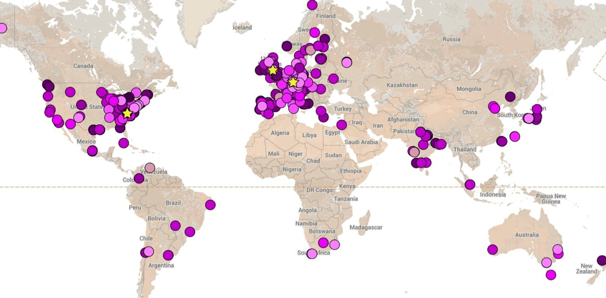
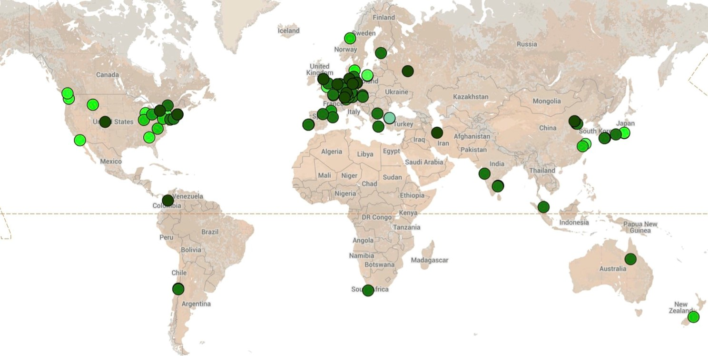

de.NBI ModSim
Resources, Services and Developments for Systems Biology Modeling
Partner project of the German Network for Bioinformatics Infrastructure (de.NBI)
COPASI
COPASI is a software tool for editing, simulating, and analyzing models of biochemical reaction networks. COPASI
is available
for all major platforms (Linux, Windows, OS X), easy to install COPASI is free and open source software.
COPASI Website
User Forum
Features
- ODE-based and stochastic formalisms
- Sensitivity analyses
- Optimization and parameter estimation
- Computation of stable states and properties of nonlinear, dynamical systems, e.g. Lyapunov exponents
- Hybrid simulation methods
- Model reduction techniques
- Further properties:
- COPASI is SBML compatible
- Standards, e.g. for model annotations are implemented
A complete list of features is available
on the COPASI website.
Usage of COPASI - global view

Note: only approx. 30% of the publications,
having used COPASI have been included so far.
For more information see the live page .
CellNetAnalyzer
CellNetAnalyzer (CNA) is a MATLAB toolbox providing a graphical user interface and various (partially unique)
computational methods and algorithms for exploring structural and functional properties of metabolic, signaling,
and regulatory networks.
CNA Website
User Forum
Features
Numerous methods and algorithms from stoichiometric and constraint-based modeling:
- conservation relations
- metabolic flux analysis
- flux balance analysis (FBA) / flux optimization
- flux variability analysis
- elementary-modes and pathway analysis
- minimal cut sets (design/redesign of metabolic networks)
- SBML import / export
Support for influence graphs / boolean networks including :
- logical steady-sate analysis (qualitative I/O behvaior)
- minimal intervention sets
- feedback loops and signaling paths
- global interdependency of species
- data-driven inference of signaling network toplogies
- simulation of logic-based ODEs (ODEfy)
- Support of the SBML Level 3 Qual extension
for a detailed
description of CellNetAnalyzer's
capabilities please see the CNA website.
Usage of CellNetAnalyzer - global view
